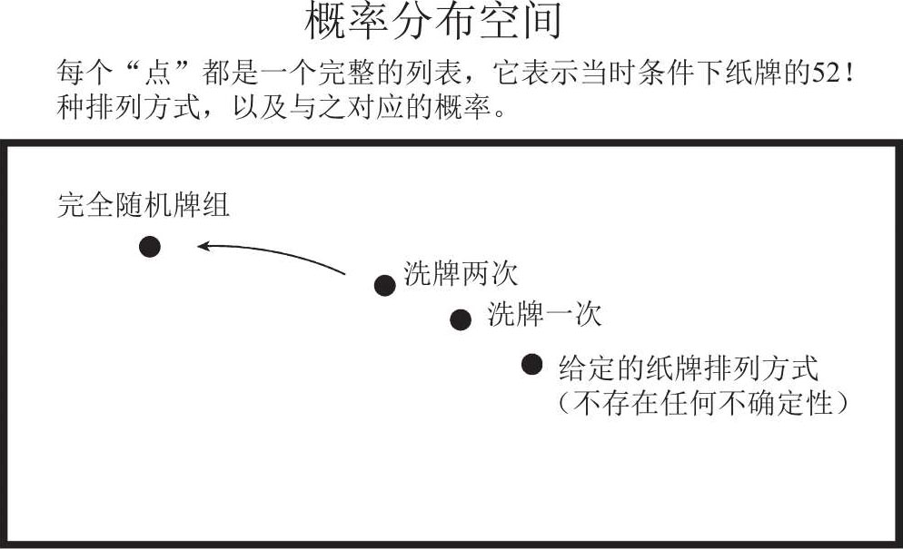
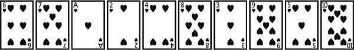
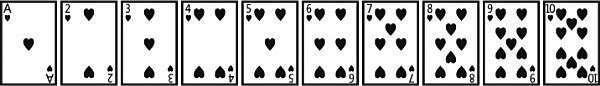
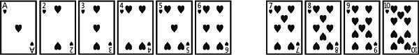
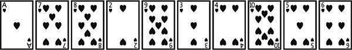
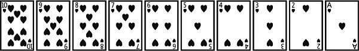

9 力量
权力本身并不会使人腐败；然而傻瓜一旦掌握了权力，就会败坏权力。
——萧伯纳
（George Bernard Shaw）1
“数学创造”的动力不是推理，而是想象力。
——奥古斯都·德·摩根
（Augustus De Morgan）2
现在有一副去掉了大小王的、牌数为 52 的标准扑克牌。对大多数人来说，这只是用来消磨时光或变魔术的常见物品，很少有人会去思考扑克还有什么其他用途。不过在数学的帮助下，你一定会对扑克产生一个全新的认知，看到它背后的强大力量。
一副牌必然会按照某种顺序（不一定非得是特殊的顺序）堆叠在一起，我们将其称为牌组的“排列方式”。看到这里，你脑海中可能立刻会浮现出一个问题，“一副由 52 张牌组成的扑克，到底有多少种排列方式？”尽管某些读者可能知道答案，但考虑到计算并非数学的核心内容，我想问你另一个问题，我还希望你可以不要进行计算，全凭直觉给出答案。问题是：以下三个数字，哪个最大？
A. 宇宙中恒星的数量
B. 大爆炸距今有多少秒（大爆炸为宇宙时间的开端）
C. 52 张纸牌的排列方式
这个问题可比刚才那个有趣多了，希望你花时间认真思考一下。
我们很快就会发现，对于一副扑克牌的深刻认知，可以让我们看到数学背后的强大力量。只要能够在练习和实践中解锁、拓展大脑中与生俱来的理性分析能力，我们就可以掌控这种力量。
力量是人类内心深处普遍存在的一种渴求，然而力量，或者说权力，听起来通常感觉像是一个不好的词，掌控权力的人很少能够得到他人的认可。想要弄清其中原因，我们需要把力量的两种含义区分开来。
力量的第一种含义，指的是事物蕴含的力量，比如电力、强风暴。力量的英文单词“power”起源于古法语单词“poeir”以及早期拉丁语单词“potere”。此外，这两个古词还衍生出了“potent”（强力的、强效的）和“potential”（名词的意思是“潜力”，形容词的意思是“潜在的”）两个英文单词。因此，强有力的（powerful）事物具有“去做成某件事”的能力。数学探索者经常会用“强有力的”一词来形容数学，就是出于这个原因。
力量的第二种含义，指的是人们指挥、影响他人（或事件）的权力。理论上来说，利用权力，人们可以惩恶扬善，扶危济困。可不幸的是，情况并不总是像理想中一样美好。权力被滥用时，随之而来的强大冲击会给数学的教育方式和学习方式带来严重的负面影响。社会学家马克斯·韦伯将权力定义为“无视他人反抗，将自己的意愿强加给他人的能力”1。在这里，韦伯把力量视为一种威胁、强迫他人去做某件事的能力。无论是对施害者，还是对受害者，这种力量都无法让人生幸福。
我更喜欢用另一种方式去理解力量的含义，把它看成是那种集真善美于一体的、对人对物都极为有益的力量。安迪·克劳奇（Andy Crouch）对此给出了如下定义：
所谓力量，就是改变世界的能力……是创造事物、构建意义的能力，它最能体现人类和其他物种的不同之处。2
其中，“创造事物”（stuff-making）和“构建意义”（sense-making）两个短语的含义可能有些不太好理解，这里我们详细分析一下。
创造事物不仅涉及人类的力量，还涉及自然的力量。比如电力就是能量的一种表现形式，它可以创造新事物。人类也可以创造各种新事物、改变周边的环境。对此，数学家的圈子中有一个很恰当的用词：变换（transformation）。就像数学方程可以变换其中的元素，地球上的各种生物也可以改变周遭环境，就连宇宙本身也处于不断变化之中。
构建意义是人类理解世界的能力，人们会尽自己最大的努力为世界赋予各种意义。当然，这一过程也充满了创造性，需要人类充分发挥自己的想象力。只有人类会试图理解世界，物体不会去理解世界。不过，某些东西，例如数学，可以帮助人类更好地理解世界。
这两件事都是数学探索者会做的事情。我们既会创造事物，例如给出定义、创建结构、证明定理、开发模型，也会构建意义——我们开发的模型、创造的符号都被赋予了实际意义。相比之下，虽然计算机也会参与到事物的创造过程中，例如我们可以用它执行程序、计算答案，但它绝不会牵扯到意义的构建（迄今为止还没有出现任何一例）。
克劳奇认为，创造事物、构建意义的力量（即创造力），是力量最深刻、最真实的表现形式。它是人类繁荣的一种标志，它有时会不同于我们习以为常的那种力量。力量存在于婴儿身上：因为他有机会去创造事物、构建意义，并伴随这个过程不断成长。力量也存在于特蕾莎修女身上：在对贫苦人民的关怀当中，她和受帮助的对象都会看到对方对于自己的意义。
然而创造力也会被滥用，因为人们有时会用创造力做一些伤天害理的事情。一旦出现这种情况，创造力就变成了强制力。强制力会削弱人们在创造事物、构建意义方面的创造能力。
创造力和强制力也存在于数学空间（即我们从事数学工作时所处的环境）当中。我们先认识一下数学当中的创造力，看看它是如何构建意义的。
我们一直在说数学蕴含着力量，可这到底是什么意思呢？
现在我们回到洗牌的话题上。为了说明数学中蕴含的各种力量，我将用纸牌为大家展现每一种力量的具体表现形式。我这样做的目的，是想让你从整体上感受一下数学的力量，所以在阅读的时候，如果你没有完全理解所有内容，也不用慌张。即便对专业的数学家来说，也很难在第一次遇到这种情况时就掌握全部细节，所以说这其实是一种正常现象，完全不用担心。我们现在做的事，相当于一边在50000 英尺[1]的高空快速飞翔，一边俯瞰下方的景致，你当然可以放松下来，心无旁骛地享受那些美丽景色。
为了学会用数学的眼光看待纸牌，我们刚才提出了这样一个问题：相比之下，哪个数值更大——是宇宙中恒星的数量，是大爆炸距今的秒数，还是 52 张纸牌的全部排列方式？
这可比直接问“一副牌共计有多少种排列方式”有趣多了，因为我们正在比较的这三个数值涉及很多具体的意义。在此过程中，我们也会看到数学中一种相当基础的力量，即诠释的力量。数学探索者绝不会满足于计算结果，因为他知道数学的根本在于理解，而不在于计算。他会仔细分析计算结果，尝试诠释它的意义，看看它是不是合情合理，思考它和其他已知事物的关联所在。
据天文学家估计，宇宙中全部恒星的数量大约为 1023，也就是23 个 10 相乘，一个由数字 1 和后面 23 个 0 组成的庞大数字。此外，天文数据表明，宇宙的年龄大约为 138 亿岁，也就是不到 1018秒。至于 52 张牌有多少种排列方式，我们可以这样计算：挑选第一张牌有 52 种可能性，之后再挑选第二张牌就只剩下 51 种可能性，挑选第三张牌就只剩下 50 种可能性……以此类推，从 52 到 1 一共52 个数字，把这 52 个数字乘在一起就是答案，我们可以将其写作“52!”，意为 52 的阶乘，其中感叹号就是阶乘符号（例如 5!就代表着5×4×3×2×1=120）。阶乘符号总是能够让人兴奋起来，只要算一算就知道为什么了：52!大约等于 1068，多么震撼人心啊！52 张纸牌居然有这么多排列方式！这个数字远远超过了宇宙恒星的数量，也远远超过了以秒为单位的宇宙年龄。而且，如果你花点时间，让理解力得到充分发挥，你就会发现：
如果在宇宙大爆炸之初就开始洗牌，每秒洗一次，就算你一直洗到今天，和纸牌的全部排列方式相比，你见证过的那些排列方式加在一起也不过是沧海一粟。
事实上，1068和 1018之间的差距简直是天壤之别，你每次洗牌都可能会遇到史无前例的排列方式。换句话说：
每次洗牌，你都是在创造历史！3
既然如此，我们会不由自主地问出另一个问题：“洗几次牌才能让一副牌混合得较为均匀？”现在我们主要分析一下大多数人都会使用的洗牌法，也就是交错式洗牌法： 将牌分成两份，然后同时洗两份牌，让它们彼此交错地叠加在一起。
你可能听到过这样的说法：需要进行 7 次交错式洗牌，才能洗好一副数量为 52 张的牌。这是数学家戴夫·拜尔（Dave Bayer）和佩尔西·戴康尼斯（Persi Diaconis）于 1994 年提出的一个数学定理。4这里我简单介绍一下他们的论证思路。
首先，“洗几次牌”这个问题有些含糊不清。什么叫“混合得较为均匀”？此时我们需要借助数学的另一种力量，即下定义的力量。对于那些尚未明确定义的词，数学探索者们会尽己所能地给出精准描述。在讨论牌组的混合之前，我们先得明确自己对牌组状态的“掌握情况”，也就是各种排列方式的概率。“概率分布”可以告诉我们每一种排列方式的可能性是多少。如上所述，52 张牌一共有 52!（约为 1068）种排列方式，所以完整的概率分布必须列出每一种排列方式的概率——如果非要我把它们列出来的话，那将是一份相当长的表单。表单一共有 52!行，每一行都要写出纸牌的排列方式以及与之对应的概率。
一开始，在进行洗牌操作之前，牌组必然已经存在一种排列方式，所以这种排列方式的概率是 1，其余排列方式的概率是 0。洗牌的过程会向其中添加一些随机性。洗牌之后，牌组状态会变得难以确定。有些排列方式的概率更高，有些则更低，概率分布可以告诉我们每一种排列的具体概率是多少。最理想的洗牌方式，就是在洗完之后每种排列出现的概率一模一样，除此之外，我们对这副牌再也无法掌握更多信息。可以运用我们下定义的力量，给纸牌的这种状态起一个名字。
我们不妨将每种排列方式概率皆相等的一副牌称为“完全随机牌组”。准确来说，完全随机牌组就是这样一种概率分布：在纸牌全部的 52! 种排列方式中，每一种方式出现的概率都是 1/52!。因此，为了衡量一副牌洗得有多好，混合得有多均匀，我们可以尝试去量化它和完全随机牌组的“距离”，这涉及数学中另一股强大的力量：量化的力量。
那么问题来了：这里“距离”指的是什么？它处于怎样的空间中？这些问题会涉及好几种数学力量：抽象的力量、可视化的力量、想象的力量。我们将运用自己的想象力，将一个抽象的空间视觉化。在这个空间中，每个点都是一个概率分布，所以实际上每个点都代表着我们对牌组当前状态的掌握情况（见下图）。完全随机牌组（状态完全未知）是该空间中的某一点，其他的点则代表着其他概率分布（也就是其他条件下我们对牌组状态的掌握情况）。现在我们想要知道，每次洗牌之后，我们对牌组的掌握情况离完全随机的状态还有多远。

接下来，为了度量概率分布空间中任意两点之间的距离，我们需要构建一个函数，就像我们为了测量真实空间中任意两点之间的距离所做的那样。在这一步骤当中，我们可以充分发挥自己的创造力。是的，没错，这真的需要一些创造力，因为你有很多方案可以选择。例如我现在想要测量地球上两个人之间的“距离”，具体方案有很多，比如下面这些：
1.测量物理距离，以英里为单位。
2.测量友情关系的距离（也称为分离程度），看看最少需要几段人脉关系，才能将两个人联系在一起。
3.测量飞行距离，以时间为单位，即飞机在两地之间的最短飞行时间。
4.测量航行距离或驾驶距离，同样以时间为单位，即两地之间水陆交通的最短时间。
5.测量“血脉距离”，看看往上追溯几代人可以找到共同的祖先。
或许你还可以想出其他思路。为了挑出一个切实可行的方案，我们需要发挥自己做决策的能力。在解题的过程中，数学探索者们早已学会了该如何做出正确的决策。研究数学时，很多人都有这样一个错误的观念：你要么知道答案，要么不知道答案，除此之外再也没有其他可能。其实数学并非如此，因为你可以把各种方案、策略组合在一起，看看哪种组合更有效，这也是数学强大力量的一种体现。
整个洗牌过程，我们都处于概率分布空间当中。戴夫·拜尔、佩尔西·戴康尼斯为这种空间挑选了一种恰当的测距方式，即“全变差距离”（total variation distance）。这里我们不必关心它具体是什么意思，因为我们的目的是从宏观角度来认知问题，只要有一种笼统的感觉即可。他们之所以选择这种测距方式，是因为它可以很好地度量每次洗牌之后，当前牌组状态和完全随机状态之间的差距。
现在，我们需要研究一下洗牌的方式，以及它对概率分布的影响。为此，我们需要借助数学中的另一种力量：建模的力量。我们会为洗牌过程建立一个数学模型，并尽力让它更为精准地反映人们的洗牌方式。拜尔和戴康尼斯采用的洗牌模型叫作吉尔伯特-香农-里德斯（Gilbert-Shannon-Reeds）模型（简称GSR模型），它是一种相当不错的近似，可以较为准确地反映真实世界的交错式洗牌法。该模型假设，洗牌时牌组会以二项分布的方式分成两堆，其中一堆有k张牌，另一堆有（52-k）张牌，k的数值等同于掷 52 次公平硬币后，硬币朝上的次数。之后，两堆纸牌会连续不断地落下，每张牌下落的概率和该牌堆当时的剩余牌数成正比。大家可以想一想，为何这种数学描述已经包含了洗牌的随机性（每次洗牌的手法不可能一模一样，随机性就是这样产生的）。例如，牌组不可能每次都刚好被分成等量的两份，但总的来说被切分的两堆纸牌张数都差不多，就像掷 52 次硬币，正面和反面出现的次数差不多一样。
GSR洗牌法的这种数学表述方式可能显得有些烦琐。不过，正如拜尔和戴康尼斯指出的那样，对于GSR洗牌法，数学中至少有四种等效的表述方式。其中一个采用了几何表述，我们需要以类似揉面团的方式来移动纸牌。还有一个采用了熵的表述方式，即所有可能出现的切牌方式和落牌方式具有相同的可能性（因此，切牌方式越不平衡——意味着落牌方式越少，它出现的可能性就越低）。GSR洗牌法的多种描述方式，可以很好地体现数学的阐释力——既然理解问题的方式多种多样，你当然可以仔细掂量一下手中已有的工具，然后选一个可以最大程度上使问题得到简化的方式。
交错式洗牌法有个一般化的形式，即“n-洗牌法”，它可以帮助我们更好地理解数学的阐释力。“n-洗牌法”和交错式洗牌法很像，但它不再将牌组切成两份，而是切成n份，然后再在洗牌的过程中叠加在一起。这里我们可以看到数学的概括力，通常来说，和解决一个特例问题相比，解决一个具有高度概括性的一般化问题可以让我们收获更多，更能看清问题的本质。可以证明，先进行一次“m-洗牌”，再进行一次“n-洗牌”，其实就等同于进行了一次“m×n-洗牌”。因此，连续两次交错式洗牌，实际上就是先进行了一次“2-洗牌”，然后又进行一次“2-洗牌”，其实也就相当于我们进行了一次“4-洗牌”。如果在此基础上再进行一次交错式洗牌，其结果就相当于我们进行了一次“8-洗牌”。如此一来，连续k次交错式洗牌，实际上就等于进行了一次“2k-洗牌”。
这一发现相当有用，它可以让我们看到洗牌过程的代数结构——这充分体现了数学洞悉结构的力量。在数学的帮助下，我们可以看到某些以前未曾发觉的结构，这些结构不仅美妙迷人，同时也能打开我们的解题思路。
纸牌中还存在另一种结构，即所谓的“递增序列”。把一摞牌从左到右依次展开（最下面的牌在最左端，最上面的牌在最右端），然后从左到右、按照牌面从小到大的顺序，依次从母序列中挑出纸牌，当该子序列达到最大长度时停止挑牌。此时的子序列就是一个递增序列。以下面的 10 张纸牌为例：

它包含 3 个递增序列，分别是： {A，2，3}，{4，5}，{6，7，8，9，10}。注意，在递增序列当中，牌面大小必须是连续的（它们出现的顺序以母序列的原始顺序为准），而且递增序列的长度必须尽可能长，直到该递增序列再也找不到其他符合条件的牌为止。由此可见，{6，7，8} 不算是上面牌组的递增序列，因为 8 后面还有 9 和 10 没有放进去。{6，7，8，9，10}才算是一个递增序列。
如果某个牌组完全有序，那么它只包含一个递增序列：

我们现在就以它为例，对它进行一次交错式洗牌。首先，我们按照二项分布的方式将牌切成两份，这意味着一份 6 张、一份 4 张的概率，等同于掷 10 次硬币正面出现 6 次的概率：

然后我们从两份牌中一张一张地抽牌，并把它们洗到一起。每张牌被抽到的概率，和这张牌所处牌堆的大小成正比。因此，第一张牌是A的概率为 6/10，第一张牌是 7 的概率为 4/10。我们不妨假定第一张牌抽到了黑桃A，那么第二张牌要么是黑桃 2，要么是黑桃 7，前者的概率为 5/9，后者的概率为 4/9，因为第一堆牌只剩下 5 张，而第二堆牌还是 4 张。不妨假定第二张牌抽到了黑桃 7。如此反复操作，我们有一定概率得到以下洗好的牌组：

可以看到，该牌组包含两个递增序列： {A，2，3，4，5，6}和{7，8，9，10}。如果再洗一次牌，那么除非遇到极端情况，否则在切牌的过程中，这两个递增序列很有可能会被分割开来。洗完之后将会形成一个新的牌组，此牌组最多包含 4 个递增序列（如果切牌手法过于极端，那么递增序列的数量会变少）。同理，第三次洗牌之后，牌组最多包含 8 个递增序列。（事实上前面已经提到，洗三次牌等同于进行一次“8-洗牌”，8 个递增序列就来自“8-洗牌”中把牌分成 8 份这个步骤。）
在递增序列这个概念的帮助下我们可以看到，进行三次交错式洗牌之后，出现某些排列方式的可能性是零，因为就 10 张牌构成的牌组而言，有些排列方式包含的递增序列数量超过了 8 个。事实上，一个完全倒序的牌组包含了 10 个递增序列，因为按照前面我们介绍的递增序列的定义，每次我们只能挑出一张牌，想要按照从左到右、从小到大的顺序遍历整个牌组，我们必须挑 10 次牌，这也就意味着该牌组包含 10 个递增序列。

你可以借用类似的推理方式分析一下由 52 张牌构成的牌组（强烈建议你亲自尝试一下！），之后你会发现，进行 5 次交错式洗牌之后，出现某些排列方式的可能性是零。因此，仅仅凭借思维的力量，我们就足以确定 5 次交错式洗牌不能让牌组彻底混合，因为 5 次洗牌根本不足以让每一种排列方式都有出现的机会，更不用说让它们出现的概率相等了。
令人感到惊讶的是，仅需两次交错式洗牌，每种排列方式出现的概率就已经相当接近了！拜尔和戴康尼斯发现，进行一次“n-洗牌”后，每种排列方式出现的概率仅取决于递增序列的数量、牌组中全部纸牌的数量，以及n的大小这三个因素。根据这一点，他们计算出了进行一次“2k-洗牌”（相当于进行了k次交错式洗牌）之后，该牌组和完全随机牌组之间的全变差距离。分析结果表明，对于一副 52 张的纸牌，至少进行 7 次交错式洗牌才能让它接近于完全随机的状态。当然，继续洗下去可以进一步缩短它和完全随机状态的距离，但效果并不明显。所以，从这个高度量化的结果来看，只需要进行 7 次GSR洗牌，牌组就已经混合得很好了，此时每种排列方式出现的概率几乎相等。
这一结论有很多引人深思的地方。例如，对于一副排列方式比全宇宙恒星数量还多的纸牌，我们居然可以得出如此精确的结论，这简直不可思议！再例如，即便纸牌的排列方式如同天文数字，但仅仅洗7 次牌之后，每种排列出现的概率就已经十分接近了！
在这个细致详尽的案例中，我们亲眼见证了数学当中诠释、下定义、量化、抽象、视觉化、想象、创造、策略分析、建模、表示方式多样化、概括、洞悉结构等各种各样的力量。任何数学学习者最终都可以熟练运用这些力量。这些优秀品格可以激发我们的创造力，让我们有能力去创造事物，构建意义。
但是金无足赤，人无完人，大家犯错的时候，有些好事也会变成坏事。数学也不例外，它有时会被人们用在歧途之上，其中蕴含的各种力量也会扭曲成一种强制力。
强制力会让大家的能力受阻，让大家无法正常发挥自己的创造力。剥夺他人接受教育的机会，实际上就是夺走了他们创造事物的工具。拒绝和“不易相处的”学生一起工作学习，实际上就是阻碍了他们蓬勃发展的步伐。强制力还会限制大家的思想，让大家无法找到自我价值，看不到工作的意义。因种族、性别、宗教、性取向、阶级或身体残疾等因素排斥他人，实际上就是在阻止他们为社会贡献自己的力量，阻止他们找到自身的价值。
为了接受数学教育，部分女性群体不得不想办法面对来自大学的强烈反对，这种事离我们并不遥远。柯瓦列夫斯卡娅（Sofia Kovalevskaya，1850——1891）是俄国的一位著名数学家，因在热传播偏微分方程和刚体旋转理论等领域做出的巨大贡献而享誉全球。然而，在圣彼得堡、海德堡求学期间，她只能私底下偷偷地去听大学课程。后来她来到了柏林，师从著名数学家卡尔·魏尔施特拉斯（Karl Weierstrass），尽管魏尔施特拉斯亲自出面为她请愿，希望当地的大学可以网开一面，让她走进校园去听他的课程，但大学方面完全无动于衷。无奈之下，他只能私下对其进行辅导。当她取得了累累硕果，准备发表博士论文时——这篇论文包含了某项如今令她名冠天下的重要发现——为了找到一所愿意给她颁发博士学位的大学，师徒二人不得不四处奔波。终于，在 1874 年的时候，哥廷根大学授予了她哲学博士学位，她成了世界上第一位拿到哲学博士学位的女性，可惜她却没能出席学位授予仪式。尽管她的某项博士研究成果已经被当时德国最负盛名的数学期刊发表，可无论在德国还是在俄国，她仍旧找不到工作。无奈之下，她只好放弃数学，拿起笔，投身于小说创作和戏剧评论。5好在六年之后，通过不懈努力，她又回到了自己热爱的数学事业当中，否则之后那一系列卓越的科研成果或许根本无法问世，以其为基础的各种科研发现更是无从谈起。
柯瓦列夫斯卡娅的遭遇表明，强制力有时会隐藏在社会准则当中——因为“自古皆然”。有些人认为，当今社会女性群体再也遇不到这种障碍了，柯瓦列夫斯卡娅的例子早已过时。可我还是希望大家认真思考一下，如今我们遵循的那些社会准则，无论是明面的还是隐性的，会不会成为某些人前进路上的阻碍？如果答案是肯定的，那我们应该考虑考虑，是不是能用手中的力量去做点什么来改变此种清规戒律。
想想那些没能战胜强权、创造力严重受限的人吧。由艾丽卡·沃克（Erica Walke）所著的《超越班内克》（Beyond Banneker）一书讲述了 200 多年前非洲裔美籍数学家的故事——若不是偶然间得到了机会，或是得到了他人的帮助，这些人或许根本没有机会去追寻自己喜欢的事业，他们的一身才华只会被人忽视或惨遭打压。6即使在今天，妇女、有色人种或其他弱势群体仍面临着各种各样的障碍，以至根本没有机会去充分发挥自己在数学领域的创造力。
强制力并非总是来自人——它有时会蛰伏在社会结构当中，以不可见的方式默默地发挥着作用。倘若家具设计不当，那些坐在轮椅上的行动不便的人士就无法像正常人一样使用它们。同理，设立某些根本没有必要的前提条件，可能会使得那些来自低收入家庭的学生无法学习高阶课程——哪怕他们为此做好了准备，而原因仅仅是他们在高中阶段没有像其他同学一样遇到深入学习数学的机会。为了评价人们在工作、信誉方面的表现，或衡量某个人是否有资格晋升，当今社会越来越依赖各种算法去给大家评分。如果这些算法的设计没有经过深思熟虑，没有得到恰当的监管，它们反而会在无形当中进一步强化社会中的各种偏见。7由此可见，我们不仅要反思自己行使权力的方式，更要反思自己为什么会放弃权力，转而把它们交给计算机一类的东西。
创造力和强制力截然不同。创造力可以同时增强主体与客体的力量。比如你教给某人一项新的数学技巧，结果就是世界上又多了一个掌握该技巧的人。在你的帮助下，这个人创造事物、构建意义的能力得到了增强。在此过程中，你自己也在成长，因为你的那份力量变得更加得心应手了。有时我们会利用数学知识服务社会，这当然也会产生增强效应。解决世界上任何一个重大问题（治愈癌症、消除饥荒、消灭人口贩卖现象等等），都必然会用到数学知识（利用数学思想、数学建模，或是建立在数学基础之上的发明创造），也必然能解救成千上万个处于困境当中的创造力。此外，一句鼓舞人心的话也蕴含着强大力量。它不会让你失去任何东西，但可以有效地鼓舞他人，提升他们的信心。创造力是一种谦逊的力量，它永远把别人放在第一位，它会想尽办法去解放他人的创造力，而强制力永远做不到这些。学生表现不佳时，一位谦逊的数学教师绝不会一上来就质问他“你这人怎么回事？！”，他会从自身出发，问问学生“你觉得我该如何调整教学方式？”。创造力是一种牺牲自我奉献他人的力量。父母会花时间陪伴孩子，和孩子们一起拓展他们的创造力。当你追寻这种创造力时，你也会收获各种优秀品质：你会养成谦逊随和、善于鼓舞、勇于牺牲、乐于奉献的性格，你会尽己所能地去激发暗藏在他人内心深处的创造力。
教育活动家帕克·帕尔默（Parker Palmer）也给出了类似的见解：
教师手中掌握着巨大的力量，这股力量决定了学生拥有怎样的学习环境，它既可以让学生日有所获，学有所得，也可以让学生虚度光阴，不学无术。教学本身就是为学生提供各种学习环境和学习条件，它是一种目的性很强的行为。想要提供好的教育，我们就必须确切地知道自己的目的是什么，确切地知道自己行为背后的内在根源。8
想要高效地使用、教授、学习数学，我们就必须认真思考力量相互作用的方式（无论是隐性的还是显性的）：人与人之间如何互动；谁拥有权威；谁拥有自由，谁受到限制；谁需要激励，谁需要劝告；谁被包括在内，谁被排除在外。这些都是和力量相关的问题。如果有什么简单的准则可以用来指导你处理和力量相关的行为，那就是：创造力可以提升人的尊严。我们可以看看“授权”（empower）这个词，向某人授权意味着什么？这意味着，我们肯定了他作为一个具有创造性的人的基本尊严。
我们还要明白，在一个腐败崩坏的世界中，权力往往是一种不劳而获的东西，掌握大权的人并不一定知道该如何正确行使权力。因此，当手中的权力越来越大，你我必须负起责任，把权力用在正道上——用它提升自己的创造力，而不是强制力。创造力不仅仅是一种工具，你不能只是为了达成某些成就而提升创造力。你应该利用创造力让自己成为一个更好的人，利用创造力去养成更多优秀品格，利用创造力去提升自己和他人在所有数学领域中的尊严。
------权力指数------
政治制度中的权力，能够影响到我们生活的方方面面。正是出于这个原因，数学家和政治学家们开发了各种用来量化权力的模型，夏普里-舒比克权力指数（Shapley-Shubik power index）便是其中之一。
假定现在有一个由 100 人组成的决策机构，分成了 3 个派系，其中A派系 50 人，B派系 49 人，C派系 1 人。想要通过一项议案，至少要 51个人同意才行，不过每个派系都是作为一个集体投票的，派系成员不能单独投票。仔细想想就会发现，C派系虽然只有 1 人，但它仍然可以起到举足轻重的作用。现实生活中其实出现过类似的情况，例如 2017 年在美国参议院，在 50 名参议员投了反对票、49 名参议员投了赞成票之后，参议员约翰·麦凯恩用自己宝贵的一票保住了奥巴马总统的医改法案。
为了量化这种影响力，不妨假设手中攥有投票权的那些派系会以某种特定的顺序走进房间，并逐渐形成一个意见统一的联盟；当联盟人数刚好足以通过某项议案时，就称刚刚进入的那个派系为关键派系。某个派系的夏普里-舒比克权力指数，指的是在全部出场顺序中，该派系为关键派系的那些出场顺序所占的比例。
继续刚才的例子，ABC三个派系一共有 6 种出场顺序：ABC，ACB，BAC，BCA，CAB，CBA（粗体字母为关键派系）。对派系A来说，它在4 种出场顺序中成为关键派系，其中包括BAC（因为派系B自己不够51 票）和BCA（因为B和C加在一起也不够 51 票）。而对派系B和C来说，B只在ABC的顺序中为关键派系，C只在ACB的顺序中为关键派系。因此，派系A的夏普里-舒比克权力指数为 4/6，B的指数为 1/6，C的指数也为 1/6。根据这种衡量权力大小的标准，尽管派系C只有1 人，但它和拥有 49 人的派系B有着同样的权力。
假如派系A有 48 人，派系B有 49 人，派系C有 3 人，在这种情况下，各派系的权力指数是多少？请你算算看。你还可以试着分析一下，假如约翰·麦凯恩、苏珊·科林斯、丽莎·默尔科夫斯基这三个人组成了一个集体投票的联盟，并向奥巴马的医改法案投出了反对票，那2017 年的结果会有什么不同。
在《数学与政治》（Mathematics and Politics）一书中，数学家艾伦·泰勒（Alan Taylor）和艾利森·帕切利（Allison Pacelli）分析了美国总统的权力大小（包括参议院和众议院在内的联邦体系中的权力大小），发现美国总统的权力指数只有约 16%。此外，他们还讨论了其他国家的政治制度，分析了其他和权力相关的概念。[2]
弗朗西斯先生，您好：
虽然您可能已经给我发了好几封邮件，试图和我取得联系，但我前段时间并不知情，因为从 4 月 16 日起我就一直被关在隔离式牢房（Segregated Housing Unit，又被称为“洞”[3]）：自从来到这所监狱，为了表达自己对政府管理方式的不满，我一直在写各种申诉信。我不知道是不是因为这件事，或是因为其他什么事，政府针对我捏造了一些不存在的暴力事件，然后以此为由把我关在了这里。
克里斯
2018 年 6 月 3 日
[1] 1 英尺≈ 0.3 米。——编者注
[2]Alan D. Taylor and Allison M. Pacelli, Mathematics and Politics: Strategy, Voting, Power,and Proof (New York: Springer, 2009). The example with groups of sizes 49, 50, and 1 appears in Steven Brams, Game Theory and Politics (New York: Free Press, 1975), 158-64.
[3] “洞”（the hole）是单独监禁的口语化表达方式。在此前的几个月里，我和克里斯一直在使用监狱里那套受限的电邮系统进行交流。后来我连续数周都没有收到他的消息，心里有点担心。收到这封信，再次和他取得联系之后，我们马上恢复了正常的邮件通信。克里斯在单独监禁的牢房中待了 5 个月，其间他和其他囚犯几乎没有任何联系。2018 年 8 月，为了抗议自己遭受的不公平对待，他绝食了 26 天。不过当时他所在的监狱并非本书开头提到的松节监狱，也不是他目前正在服刑的这座监狱。